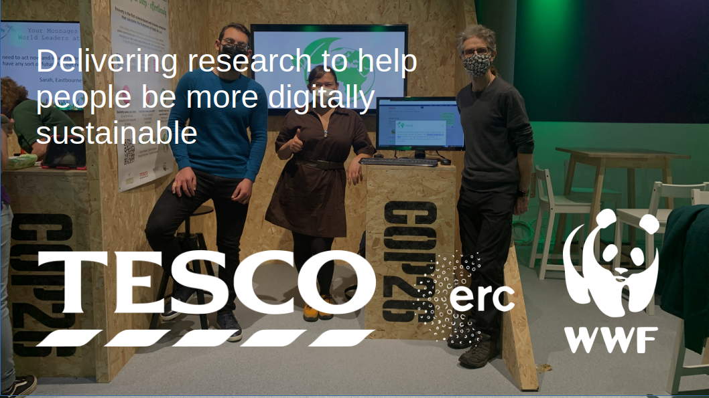
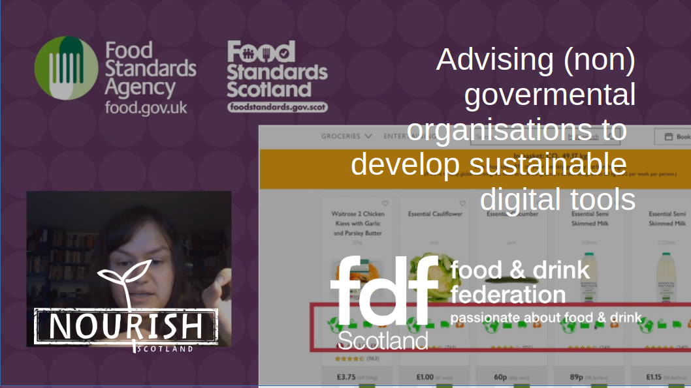

Questions I help answer
- What do current or desired customers want, think, feel, and do?
- What is their current experience of our product or service?
- Which research or experimental design is right for our goals?
- Who else is doing something similar?
- What’s the best way to communicate research results so they drive impact?
Methods I use
- Literature review & market analysis
- Quantitative methods (numbers-driven insights): surveys & questionnaires, A/B testing, analytics and usage data, controlled experiments, benchmarking studies
- Qualitative methods (deep human insights): interviews, focus groups, field studies / ethnography, usability testing, diary studies, Research-through-Design
- Statistical analysis
Outcomes
- Reduce Risk: Spot design flaws early before they cost time and money.
- Increase Adoption: Create products and services people actually want to use.
- Boost Performance: Improve efficiency, conversion, and customer loyalty.
- Stay Competitive: Leverage data and insights to outpace rivals.
Resources
- About Human-centred Design
- Gözel's Publications
Expertise
Case Studies

